11. The rmg.spectral Module¶
11.1. Classes in rmg.spectral¶
11.1.1. CharacteristicFrequency¶
- class rmg.spectral.CharacteristicFrequency(lower=0.0, upper=0.0, degeneracy=1)¶
Represent a characteristic frequency in the frequency database. The characteristic frequency has a real lower bound lower, a real upper bound upper, an integer degeneracy.
- generateFrequencies(count=1)¶
- Generate a set of frequencies. The number of frequencies returned is self.degeneracy * count, and these are distributed linearly between self.lower and self.upper.
11.1.2. FrequencyDatabase¶
- class rmg.spectral.FrequencyDatabase¶
Represent an RMG frequency database.
- load(dictstr, treestr, libstr)¶
- Load a group frequency database. The database is stored in three files: dictstr is the path to the dictionary, treestr to the tree, and libstr to the library. The tree is optional, and should be set to ‘’ if not desired.
11.1.3. HarmonicOscillator¶
- class rmg.spectral.HarmonicOscillator(frequency=0.0)¶
A representation of a vibrational mode as a one-dimensional quantum harmonic oscillator. The oscillator is defined by its frequency in cm^-1.
- densityOfStates(Elist)¶
Return the density of states at the specified energies Elist in J/mol above the ground state. The formula is
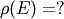
where 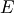 is energy. Note that the Beyer-Swinehart algorithm provides a far more efficient method of convolving vibrational modes into a density of states expression, so this function should not be called for that purpose.
- fromXML(document, rootElement, frequencyScaleFactor=1.0)¶
- Convert a <harmonicOscillator> element from a standard RMG-style XML input file into a HarmonicOscillator object. document is an io.XML class representing the XML DOM tree, and rootElement is the <harmonicOscillator> element in that tree.
- heatCapacity(Tlist)¶
Return the contribution to the heat capacity due to hindered rotation. The formula is
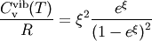
where
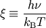
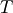 is temperature, 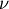 is the vibration frequency, 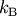 is Boltzmann’s constant, and 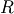 is the gas law constant.
- partitionFunction(Tlist)¶
Return the value of the partition function at the specified temperatures Tlist in K. The formula is
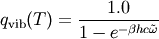
where is temperature, 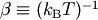, 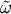 is rotational frequency in cm^-1, is the speed of light, is Boltzmann’s constant, and 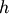 is Planck’s constant. Note that we have chosen our zero of energy to be at the zero-point energy of the molecule, not the bottom of the potential well.
- toXML(document, rootElement)¶
- Add a <harmonicOscillator> element as a child of rootElement using RMG-style XML. document is an io.XML class representing the XML DOM tree.
11.1.4. HinderedRotor¶
- class rmg.spectral.HinderedRotor(frequency=0.0, barrier=0.0)¶
A one-dimensional hindered rotor approximation of (internal) rotational modes. This class implements the Pitzer model of one-dimensional hindered rotation, which utilizes a hindered potential function
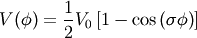
where 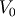 is the height of the potential barrier and
 the number of minima or maxima in one revolution of angle 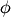. The
hindered rotor is therefore described by two quantities: the frequency of
rotation in cm^-1, and the barrier height in cm^-1.
the number of minima or maxima in one revolution of angle 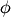. The
hindered rotor is therefore described by two quantities: the frequency of
rotation in cm^-1, and the barrier height in cm^-1.- densityOfStates(Elist)¶
Return the density of states at the specified energlies Elist in J/mol above the ground state. The formula is
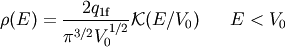
and

where is energy, is barrier height, and 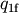 is defined in the equation for the partition function.
 is the complete elliptic integral of the first
kind.
is the complete elliptic integral of the first
kind.
- fromXML(document, rootElement, frequencyScaleFactor=1.0)¶
- Convert a <hinderedRotor> element from a standard RMG-style XML input file into a HinderedRotor object. document is an io.XML class representing the XML DOM tree, and rootElement is the <hinderedRotor> element in that tree.
- heatCapacity(Tlist)¶
Return the contribution to the heat capacity due to hindered rotation. The formula is
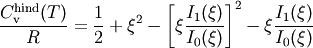
where
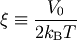
is temperature, is barrier height, is Boltzmann’s constant, and is the gas law constant.
- partitionFunction(Tlist)¶
Return the value of the partition function at the specified temperatures Tlist in K. The formula is

where is temperature, is the barrier height, is rotational frequency in cm^-1, is the speed of light, is Boltzmann’s constant, and is Planck’s constant.
is a placeholder for
the symmetry number. 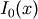 is the modified Bessel function of
order zero.
- toXML(document, rootElement)¶
- Add a <hinderedRotor> element as a child of rootElement using RMG-style XML. document is an io.XML class representing the XML DOM tree.
11.1.5. RigidRotor¶
- class rmg.spectral.RigidRotor(linear=False, frequencies=None)¶
A rigid rotor approximation of (external) rotational modes. The linear attribute is True if the associated molecule is linear, and False if nonlinear. For a linear molecule, frequencies stores a list with one frequency, that of the rotation, in cm^-1. For a nonlinear molecule, frequencies stores a list of the three frequencies of rotation, even if two or three are equal, in cm^-1. Symmetry number corrections are not applied by this class.
- densityOfStates(Elist)¶
Return the density of states at the specified energlies Elist in J/mol above the ground state. The formula is
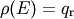
for linear rotors and
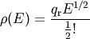
for nonlinear rotors. Above, is energy and 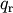 is defined in the equation for the partition function.
- fromXML(document, rootElement)¶
- Convert a <rigidRotor> element from a standard RMG-style XML input file into a RigidRotor object. document is an io.XML class representing the XML DOM tree, and rootElement is the <rigidRotor> element in that tree.
- heatCapacity(Tlist)¶
Return the contribution to the heat capacity due to rigid rotation. The formula is
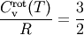
if nonlinear and
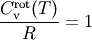
if linear, where is temperature and is the gas law constant.
- partitionFunction(Tlist)¶
Return the value of the partition function at the specified temperatures Tlist in K. The formula is
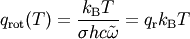
for linear rotors and
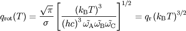
for nonlinear rotors. Above, is temperature, is rotational frequency in cm^-1, is the speed of light, is Boltzmann’s constant, and is Planck’s constant.
is a placeholder for
the symmetry number.
- toXML(document, rootElement)¶
- Add a <rigidRotor> element as a child of rootElement using RMG-style XML. document is an io.XML class representing the XML DOM tree.
11.1.6. SpectralData¶
- class rmg.spectral.SpectralData(modes=None, symmetry=1)¶
A set of spectroscopic data for a given molecule. The degrees of freedom of the molecule are stored as a list in the modes attribute.
- densityOfStates(Elist)¶
- Return the value of the density of states in mol/J at the specified energies Elist in J/mol above the ground state.
- fromXML(document, rootElement)¶
- Convert a <spectralData> element from a standard RMG-style XML input file into a SpectralData object. document is an io.XML class representing the XML DOM tree, and rootElement is the <spectralData> element in that tree.
- partitionFunction(Tlist)¶
- Return the value of the partition function at the specified temperatures Tlist in K.
- toXML(document, rootElement)¶
- Add a <spectralData> element as a child of rootElement using RMG-style XML. document is an io.XML class representing the XML DOM tree.
11.1.7. Translation¶
- class rmg.spectral.Translation(mass=0.0, dimension=3)¶
A representation of translational modes. The dimension attribute is an integer representing the dimension of the translation (2 or 3) and the mass is the molar mass of the molecule in kg/mol.
- densityOfStates(Elist, V=1.0)¶
Return the density of states at the specified energlies Elist in J/mol above the ground state. The formula is
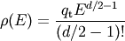
where is energy, 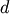 is dimensionality, and 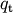 is defined in the equation for the partition function.
- heatCapacity(Tlist, V=1.0)¶
Return the contribution to the heat capacity due to translation. The formula is
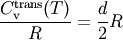
where is temperature, 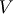 is volume, is dimensionality, and is the gas law constant.
- partitionFunction(Tlist, V=1.0)¶
Return the value of the partition function at the specified temperatures Tlist in K. The formula is
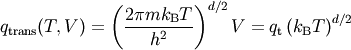
where is temperature, is volume,
 is mass,
is dimensionality, is Boltzmann’s
constant, and is Planck’s constant.
is mass,
is dimensionality, is Boltzmann’s
constant, and is Planck’s constant.
11.2. Methods in rmg.spectral¶
- rmg.spectral.generateSpectralData(struct, thermoData)¶
Generate the spectral data for a structure.Structure object struct with corresponding thermo.ThermoGAData object thermo. The group frequency method is used to do so; this method has two steps:
- Search the structure for certain functional groups for which characteristic frequencies are known, and use those frequencies.
- For any remaining degrees of freedom, fit the parameters such that they replicate the heat capacity.
This method only fits the internal modes (i.e. vibrations and hindered rotors).